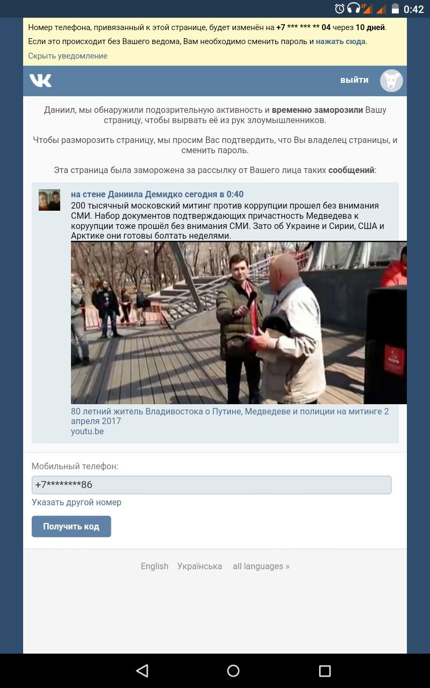

ВКонтакте начал блокировки по ключевым словам!
Я не могу понять в какой момент это случилось. В какой момент мы упустили свободный интернет?ВКонтакте начал «политические» блокировки по контенту и ключевым словам примерно день назад, чему свидетелей стало множество людей, в том числе я я сам. Я сразу не поверил в произошедшее и решил что это какая то ошибка, ведь ВК это крупнейшая соцсеть в России и никакой её модератор не пойдёт на подобные действия из-за личных пристрастий.
После просмотра этого видео, я решил выложить его на свою стену, соответствующим образом оформив текстовым содержимым.
Результат произошел мгновенно, его вы можете лицезреть на первом скрине:

Я сперва подумал что это какая-то ошибка, но вскоре убедился что случилось такое не только со мной -- смотрите второй скрин:
Лично я ожидаю от ВКонтакте официальных разъяснений.